ClinicusMed · Classificação SNC/SNP, Morfologia da Medula, Meninges e Vascularização · Ficha Padronizada
O sistema nervoso compreende o neuroeje — encéfalo e medula espinal (SNC) — e o sistema nervoso periférico (nervios cranianos e nervios espinhais). A medula espinal (ME), extremo caudal do tubo neural, ocupa o conduto vertebral e é o elo entre o encéfalo e quase todo o corpo: por ela passam as vias motoras descendentes e as vias sensitivas ascendentes, e dela emergem os 31 pares de nervios espinhais. Essa ficha cobre a classificação geral do sistema nervoso, a morfologia externa e interna da medula espinal, as meninges espinhais e a vascularização medular — base indispensável para entender qualquer nervio periférico estudado depois.
Ao final dessa ficha, você será capaz de classificar o sistema nervoso em central e periférico, reconhecendo os componentes de cada divisão; descrever os limites, porções e intumescências da medula espinal, bem como o cone medular, a cauda equina e o filum terminal; identificar as 3 faces da medula espinal e seus sulcos/cordões; descrever a configuração interna da medula (substância cinzenta em H e substância branca) e a sistematização funcional das astas; traçar a disposição das raízes anteriores e posteriores e a formação do nervio espinhal; descrever as 3 meninges espinhais e seus espaços; e relacionar a vascularização medular e as lesões por nível com suas correlações clínicas (punção lombar, hérnia de disco, isquemia medular).
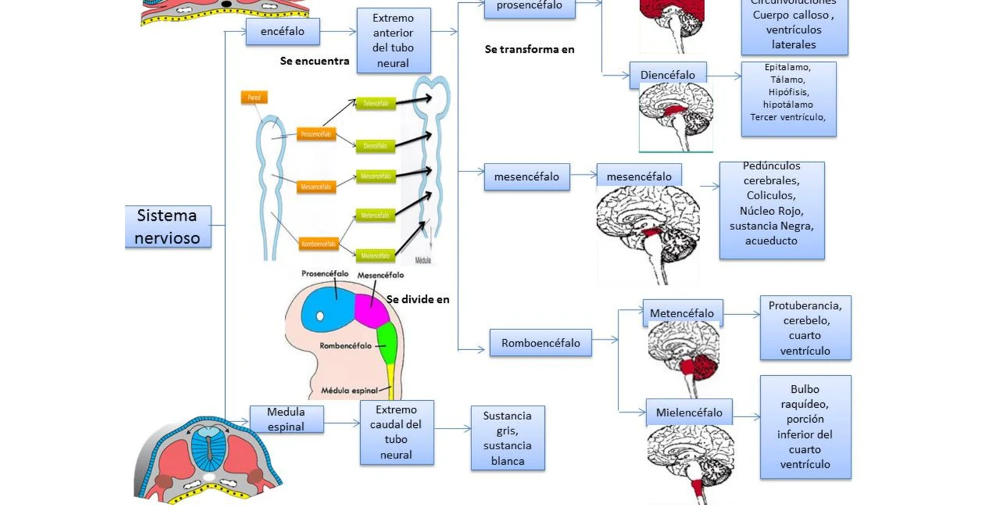
O sistema nervoso origina-se do tubo neural (ectoderma neural). O extremo anterior do tubo se diferencia em 3, depois 5 vesículas encefálicas (telencéfalo, diencéfalo, mesencéfalo, metencéfalo, mielencéfalo), formando o encéfalo. O extremo caudal do tubo neural, que não se dilata em vesículas, forma a medula espinal — mantendo sua organização tubular simples, com substância cinzenta central e substância branca periférica.
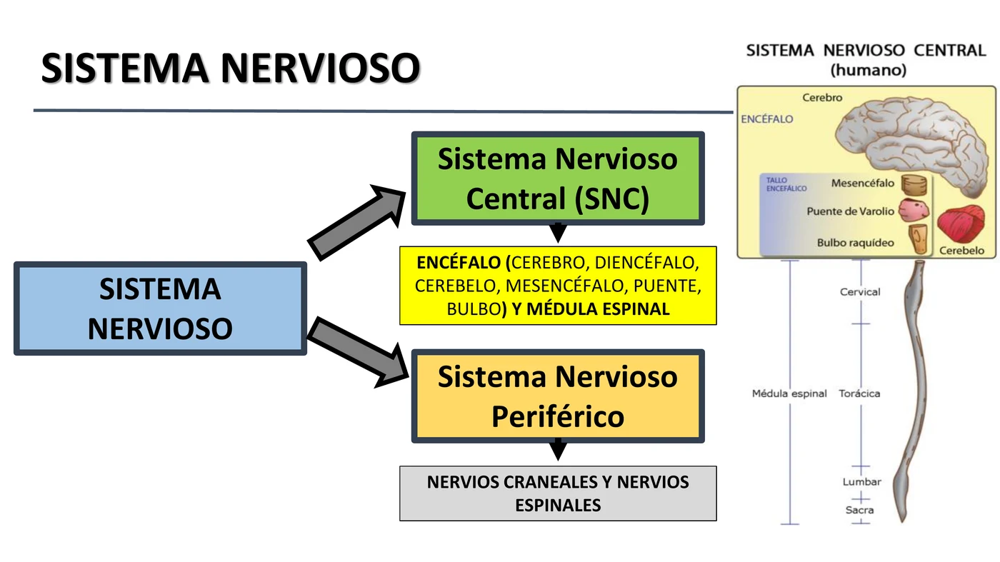
| Divisão | Componentes |
|---|---|
| Sistema Nervoso Central (SNC) | Encéfalo (cérebro, diencéfalo, cerebelo, mesencéfalo, ponte/puente de Varolio, bulbo raquídeo) + Medula Espinal |
| Sistema Nervoso Periférico (SNP) | Nervios cranianos (12 pares, do encéfalo) e nervios espinhais (31 pares, da medula) |
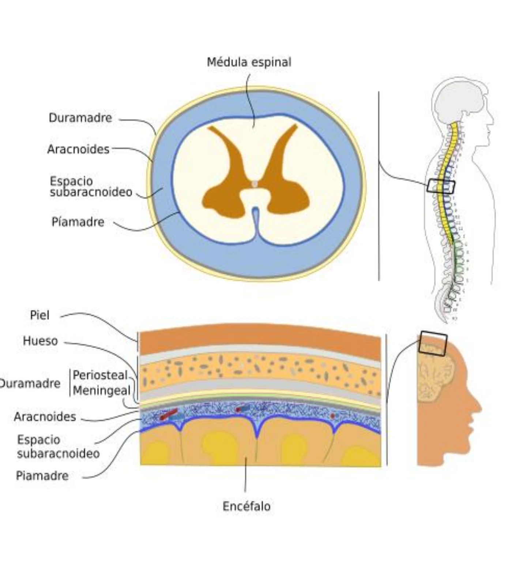
As 3 meninges (duramadre, aracnoide e piamadre) envolvem tanto o encéfalo quanto a medula espinal, mantendo a mesma disposição básica: duramadre mais externa e resistente, aracnoide intermediária formando o espaço subaracnóideo preenchido por líquido cefalorraquídeo (LCR), e piamadre mais interna, aderida diretamente ao tecido nervoso.
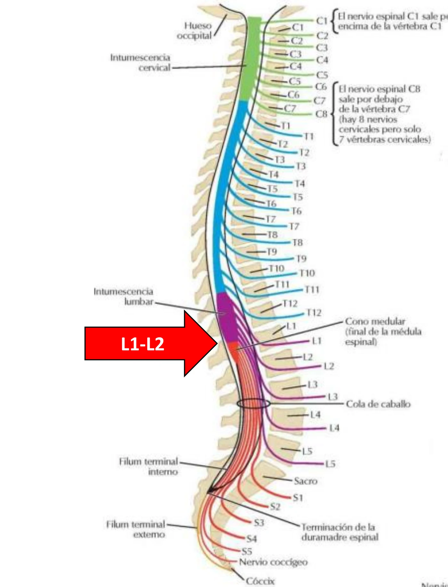
A medula espinal (ME) é um longo cordão cilíndrico, ligeiramente aplanado em sentido anteroposterior, que ocupa o conduto vertebral da coluna. Seu limite superior é difícil de estabelecer com precisão — continua-se sem transição nítida com a medula oblongada (bulbo), ao nível do atlas/áxis (forame magno). Seu limite inferior situa-se ao nível de L1-L2, onde termina afilando-se no cone medular.
| Porção | Nível / Característica |
|---|---|
| Porção superior | Continuação com a medula oblongada, ao nível do atlas/áxis |
| Intumescência cervical | C3 a T3 — origina os nervios do plexo braquial (membro superior) |
| Porção torácica | T3 a T9 — a mais estreita, menor diâmetro |
| Intumescência lombossacra | T9 a L2 — origina os nervios do plexo lumbossacro (membro inferior) |
| Cone medular | Extremidade inferior afilada, nível L1-L2 |
| Filum terminal | Prolongamento fibroso do cone medular, ~20cm, até o cóccix |
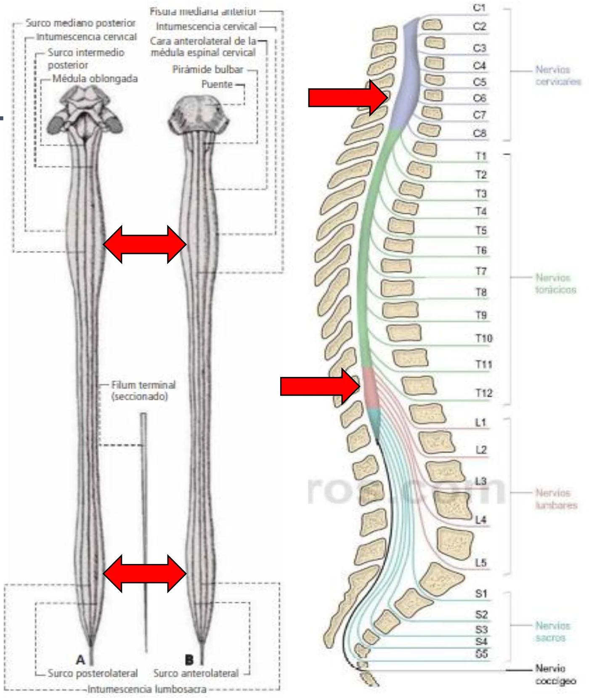
Como a medula espinal termina em L1-L2 mas a coluna vertebral continua até o sacro, os segmentos medulares não coincidem com as vértebras de mesmo nome — essa discrepância aumenta progressivamente de cima para baixo. As raízes nervosas precisam percorrer uma distância cada vez maior dentro do conduto vertebral até alcançar seu forame de saída correspondente.
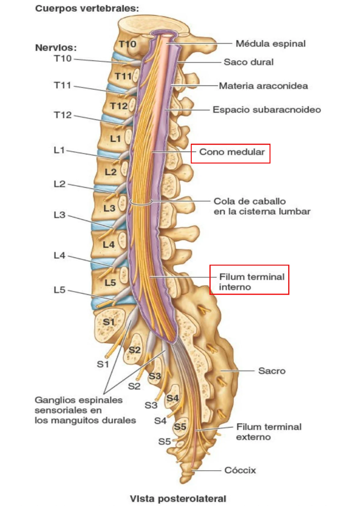
Como a ME termina em L1-L2 mas as raízes nervosas lombares e sacras precisam alcançar seus forames correspondentes (até S5/cóccix), elas descem verticalmente dentro do saco dural, formando um feixe de raízes ao redor do filum terminal que lembra uma cauda de cavalo — a cauda equina. O filum terminal é o prolongamento fibroso (não nervoso) do cone medular, que ancora a medula ao cóccix.
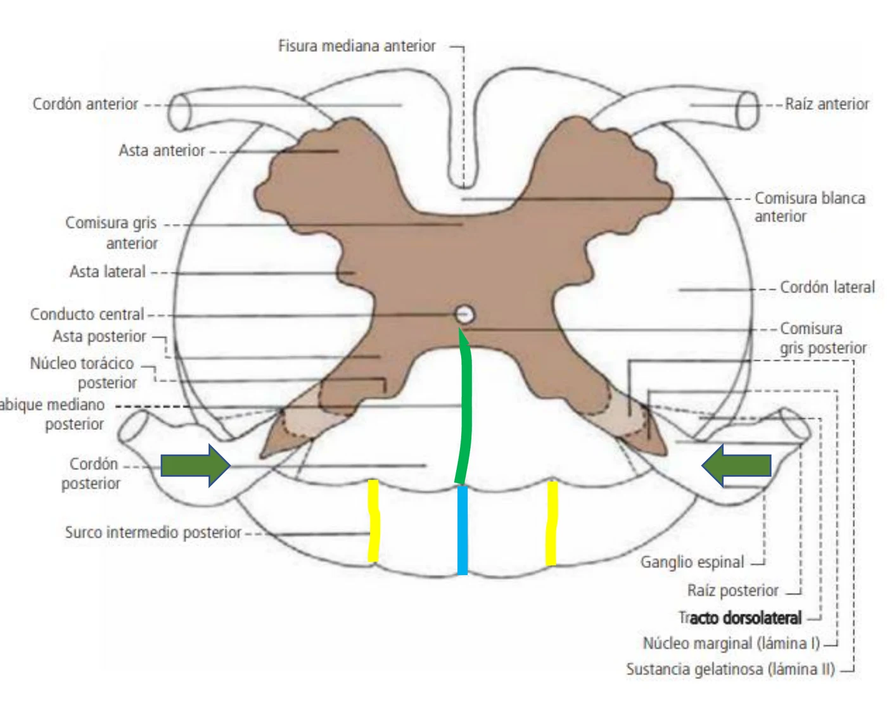
A medula espinal apresenta 3 faces: uma face anterior, com a fisura mediana anterior (profunda) e os sulcos anterolaterais (por onde emergem as raízes anteriores/motoras) delimitando 2 cordões anteriores; uma face posterior, com o sulco mediano posterior (que se aprofunda pelo tabique mediano posterior, dividindo essa face em 2 cordões posteriores) e os sulcos posterolaterais (por onde entram as raízes posteriores/sensitivas); e 2 faces laterais, correspondentes aos cordões laterais.
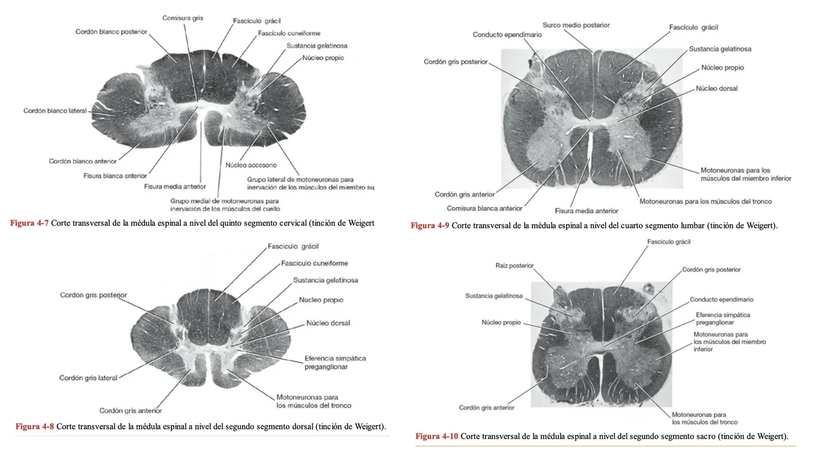
Em corte transversal, a medula espinal mostra uma substância cinzenta central em forma de "H" (ou borboleta), envolvida por substância branca periférica. A substância cinzenta apresenta asta anterior (mais larga e arredondada), asta posterior (mais estreita e alongada) e, em níveis torácicos/lombares altos, asta lateral. As 2 metades se comunicam pelas comissuras cinzentas (anterior e posterior), ao redor do conduto ependimário central.
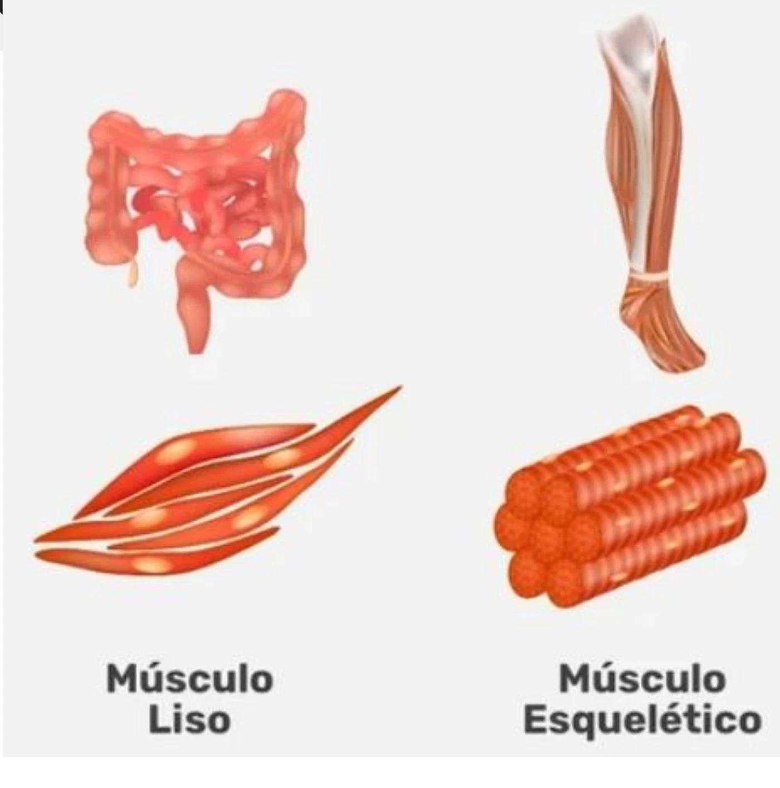
| Asta | Função | Sistematização |
|---|---|---|
| Asta Anterior | Motor | Na cabeça: motoneurônios somatomotores (músculo estriado/voluntário). Na base, perto do conduto ependimário: viscero-motores (músculo liso/involuntário) |
| Asta Posterior | Sensitivo | Na cabeça: exteroceptiva (pele). No pescoço: proprioceptiva (músculos/articulações). Na base: interoceptiva (vísceras) |
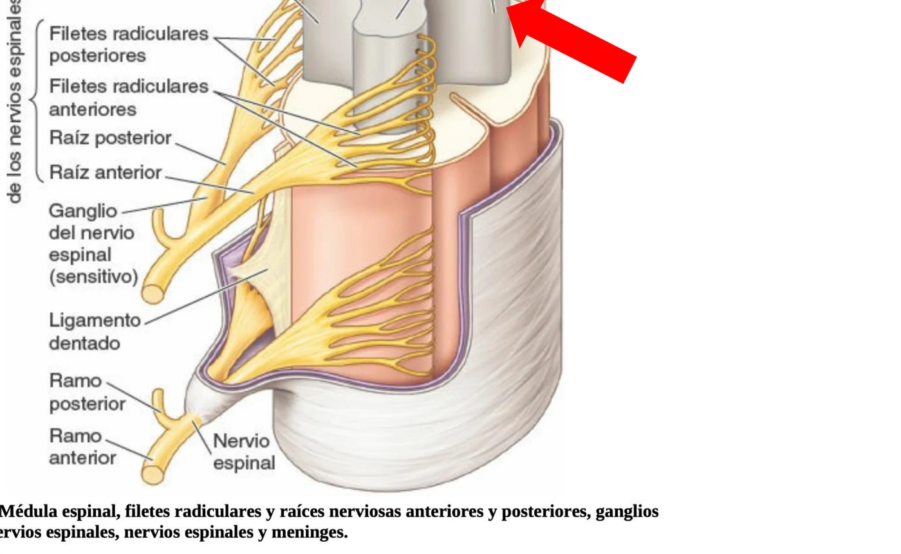
Cada nervio espinhal nasce de 2 raízes: a raiz anterior (motora, formada por filetes radiculares que emergem do sulco anterolateral) e a raiz posterior (sensitiva, formada por filetes radiculares que entram pelo sulco posterolateral, apresentando o gânglio espinhal — corpos dos neurônios sensitivos). As 2 raízes se unem no forame intervertebral, formando um nervio espinhal mixto, que logo se divide em ramo anterior (forma os plexos: cervical, braquial, lumbar, sacro) e ramo posterior (pele e músculos do dorso, sempre segmentar, nunca forma plexos).
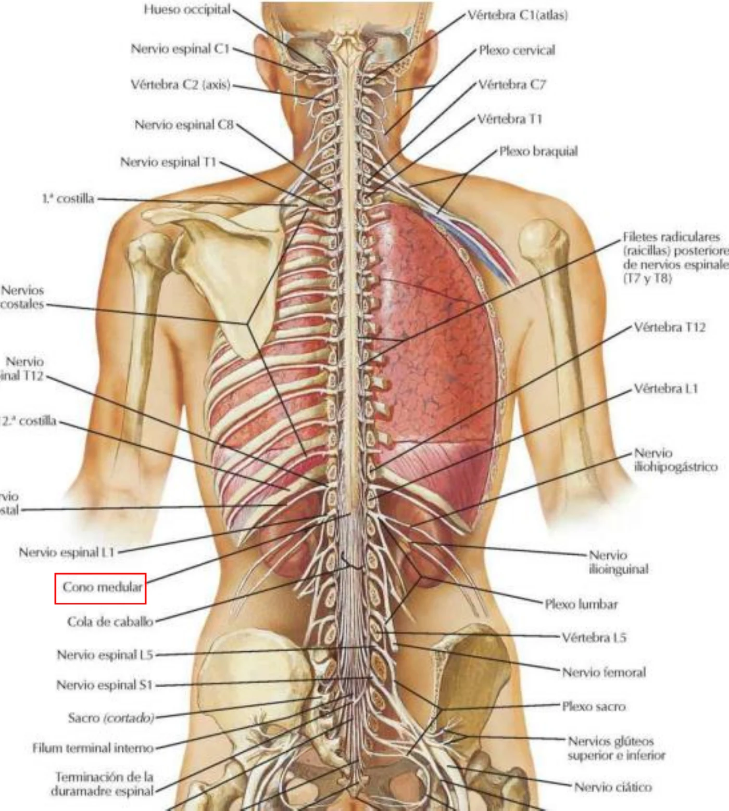
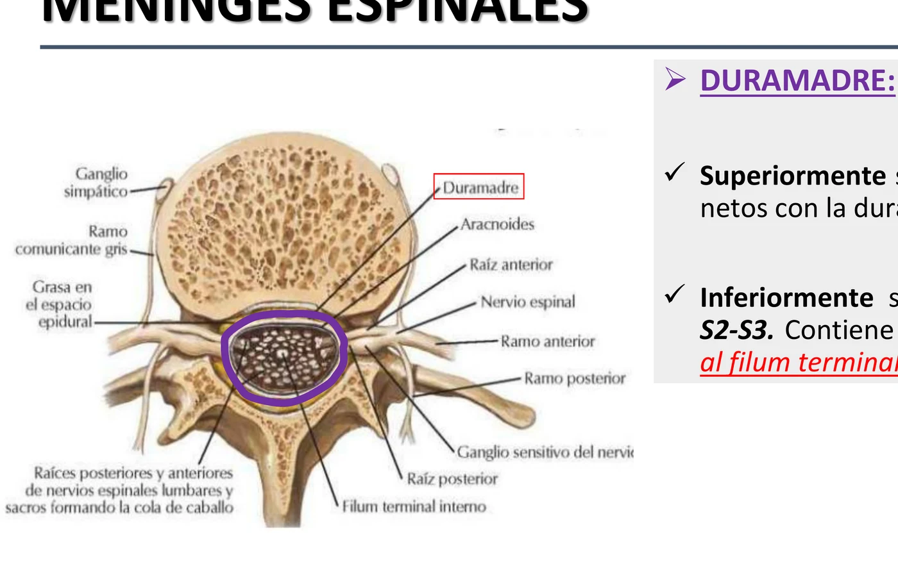
| Meninge | Características |
|---|---|
| Duramadre | Mais externa e resistente. Separada do periósteo vertebral pelo espaço epidural (gordura, plexos venosos — local da anestesia peridural). Continua-se sem limites nítidos com a duramadre craneal, superiormente; para inferiormente até S2-S3, onde se afunila envolvendo o filum terminal |
| Aracnoide | Interposta entre dura e piamadre; forma uma lâmina externa (aracnoide propriamente dita) e uma camada interna que constitui o espaço subaracnóideo, por onde circula o LCR. Contém a cauda equina e o filum terminal |
| Piamadre | Mais interna, aderida diretamente à superfície da medula. Emite o ligamento dentado (fixação lateral da ME à duramadre) e continua-se, abaixo do cone medular, como o filum terminal |
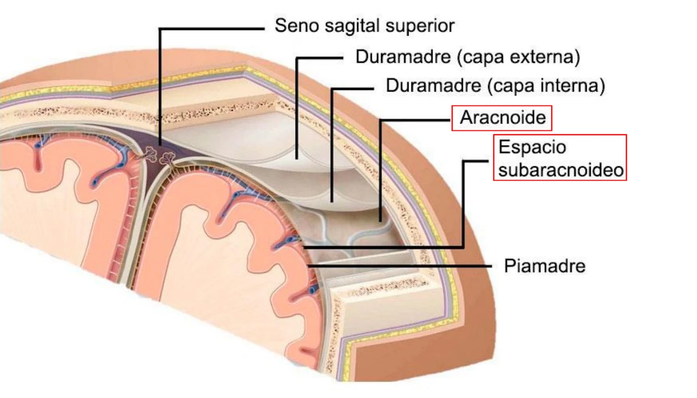
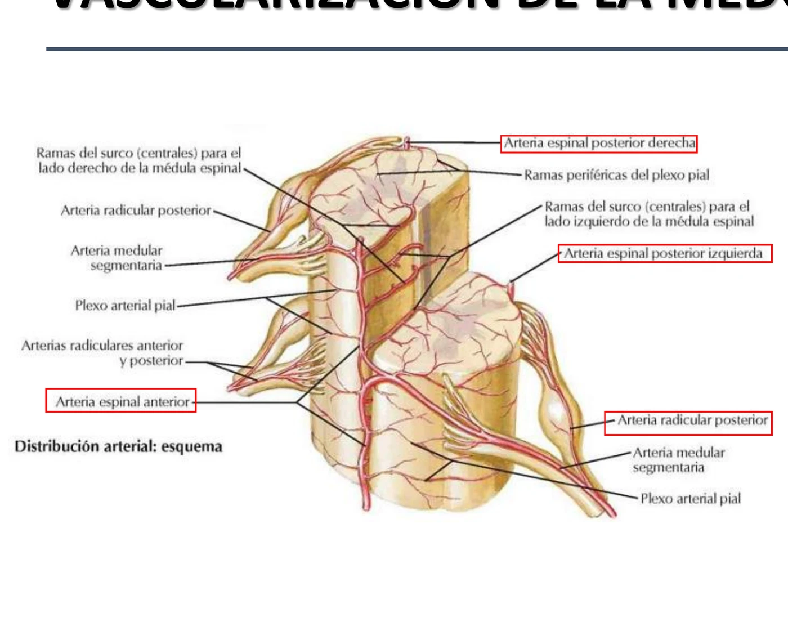
A medula espinal é irrigada por 62 artérias radiculares, que nascem no pescoço das artérias vertebrais, no tórax das intercostais posteriores, na região lombar das artérias lumbares e na pelve das artérias sacras. Elas alimentam 2 sistemas arteriais longitudinais: a artéria espinal anterior (única, situada na fisura mediana anterior) e as 2 artérias espinais posteriores (uma de cada lado, descendo pelos sulcos posterolaterais).
| Tema | Frequência |
|---|---|
| Limites, porções e intumescências da medula espinal | 🔥🔥🔥🔥🔥 |
| Cone medular, cauda equina e nível de punção lombar | 🔥🔥🔥🔥🔥 |
| Configuração interna — substância cinzenta em H e astas | 🔥🔥🔥🔥 |
| Disposição das raízes e formação do nervio espinhal | 🔥🔥🔥🔥 |
| As 3 meninges espinhais e seus espaços (epidural, subaracnóideo) | 🔥🔥🔥🔥 |
| Vascularização medular — artéria espinal anterior/posteriores | 🔥🔥🔥 |
| Classificação SNC/SNP e correlação com lesões por nível | 🔥🔥🔥 |
A diferença entre o fim da medula (L1-L2) e o fim do saco dural (S2-S3) cria uma janela segura para procedimentos.
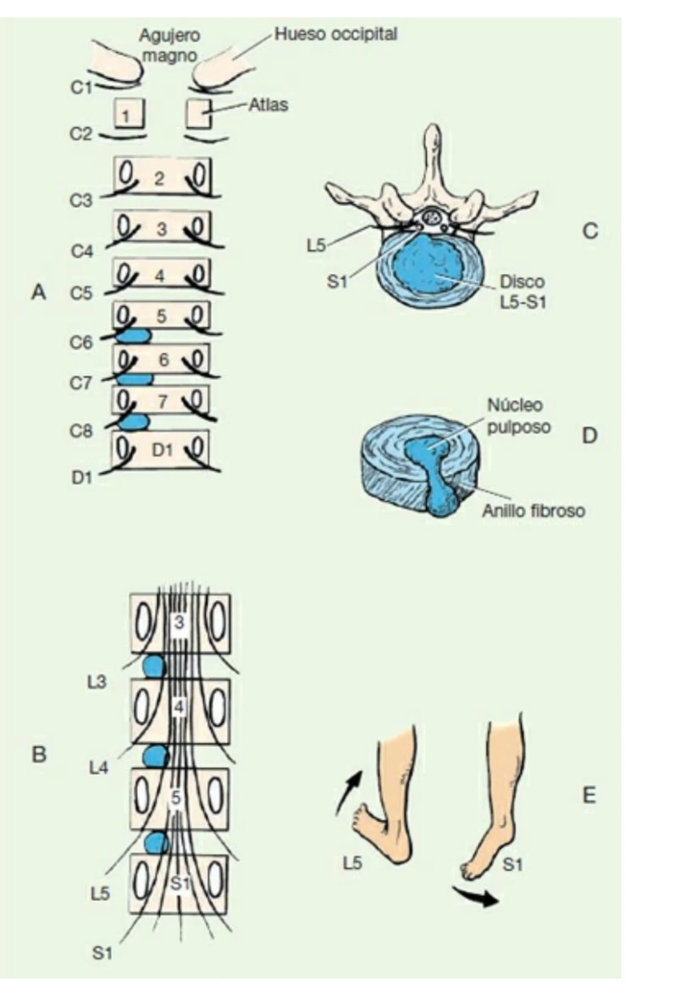
Os nervios espinhais lumbares aumentam de tamanho das raízes superiores para as inferiores, enquanto o diâmetro dos forames intervertebrais diminui no mesmo sentido — uma combinação que torna as raízes lombares baixas (L4, L5) particularmente vulneráveis à compressão.
A artéria espinal anterior irriga os 2/3 anteriores da medula (astas anteriores e tratos motores), enquanto as 2 artérias espinais posteriores irrigam o 1/3 posterior (cordões posteriores, via proprioceptiva).
O nível de uma lesão medular traumática determina o quadro clínico esperado — uma correlação muito cobrada em prova.
| Nível da Lesão | Quadro Clínico |
|---|---|
| C1-C3 | Perda de função abaixo da cabeça; risco de óbito por comprometimento do centro respiratório (nervio frênico, C3-C5) |
| C4-C5 | Tetraplegia, com a respiração ainda parcialmente preservada (diafragma inervado por C3-C5) |
| C6-C8 | Perda de função nos membros inferiores e nas mãos; alguma função do ombro/braço proximal preservada |
| T1-T9 | Paraplegia, com função dos membros superiores preservada |
| T10-L1 | Função parcial dos músculos da coxa preservada |
| L2-L3 | A maior parte da função muscular das pernas é preservada |
15 imagens — diagramas da cátedra, ilustrações clássicas Netter e cortes histológicos, cobrindo classificação do sistema nervoso, morfologia da medula espinal, raízes, meninges e vascularização. Toque em qualquer imagem pra abrir em tamanho grande (🔍 zoom).
20 rodadas de perguntas rápidas sobre classificação do sistema nervoso, morfologia da medula espinal, raízes, meninges e vascularização, 1 por vez, 60 segundos pra você responder mentalmente. A pergunta muda sozinha quando o tempo acaba (ou clica em "Já sei, próxima"). No final, você vê o gabarito completo de tudo.
O sistema guarda, no seu navegador, quais cards você já sabe bem e quais precisam voltar mais cedo — cada vez que você avalia um card, ele recalcula quando ele deve voltar.
20 questões cobrindo classificação do sistema nervoso, morfologia e configuração interna da medula espinal, raízes, meninges e vascularização. Escolhe uma alternativa, depois clica em "Ver comentário completo".